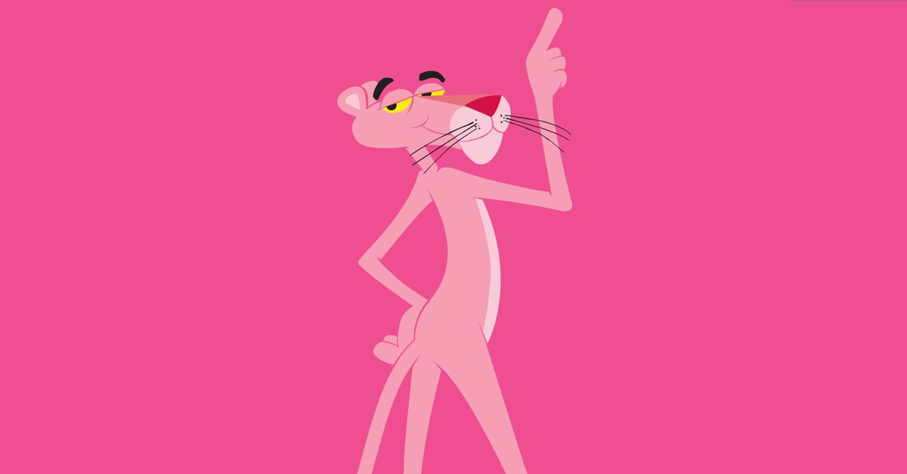
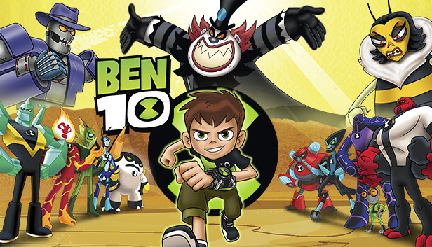

| ទំព័រដើម ទូស័ព្ទនិង Tablets កុំព្យូរទ័រ ទូស័ព្ទ ទីតាំង | |
|---|---|
|  Pink Panter
The Pink Panther is a fictional animated character who appears in the opening and/or closing credit sequences of every film in The Pink Panther series except for A Shot in the Dark and Inspector Clouseau. |
Pink Panter
The Pink Panther is a fictional animated character who appears in the opening and/or closing credit sequences of every film in The Pink Panther series except for A Shot in the Dark and Inspector Clouseau.  BEN 10 Ben 10 is an American media franchise created by Man of Action Studios and produced by Cartoon Network Studios and owned by Warner Bros. Discovery. |